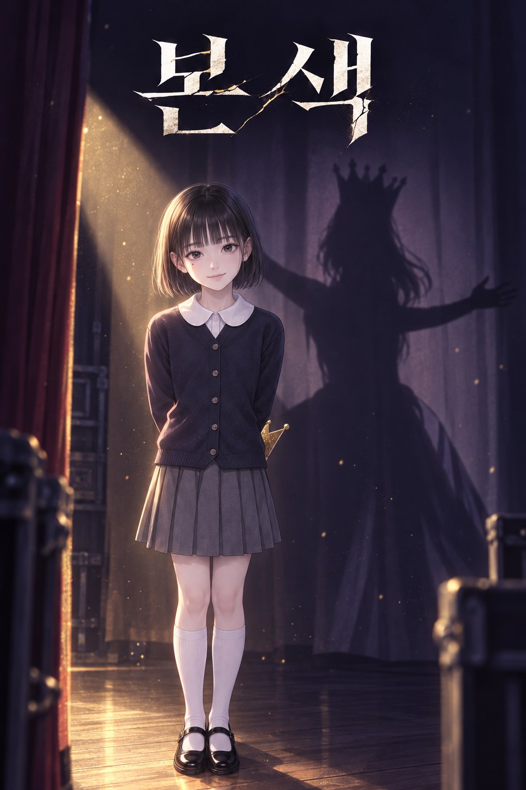

심리 스릴러 · 성장 드라마
본색
한 번도 앞에 나선 적 없는 모범생이, 20년에 걸쳐 자기 안의 폭력과 권력욕을 알아 간다.
“나서는 애들은 멍청하다.” 친구를 길들이고, 부모를 속이고, 아는 척하는 어른을 비웃으며 자란 권세아. 서른 살, 어릴 적 동창인 국회의원의 연설문을 쓰는 보좌관이 된 세아는 금 간 거울 앞에서 피 묻은 손을 씻으며 처음으로 묻는다. 나는 대체 무엇이었을까.
회차
1~2화 · 2026년 10월3화부터 60화까지는 전체 스토리보드에 회차별 장면과 끊는 지점까지 정리되어 있습니다.
해원초등학교 4학년 3반 학예회 · 2006
「벌거벗은 임금님」 배역표
- 임금
- 전진우정답을 몰라도 손부터 드는 아이
- 진실을 외치는 아이
- 백유리거짓말을 못 하는 얼굴
- 해설
- 권세아무대 옆에 서서 이야기를 쥐는 아이
- 연출
- 정미란 선생님“이 연극의 교훈은 정직이에요.”
20년 뒤, 이 배역은 여의도에서 다시 무대에 오른다.
이 작품을 보는 법
내레이션은 세아의 말이고, 그림은 실제로 일어난 일입니다. 둘이 어긋나는 순간마다, 글보다 그림을 믿으세요.